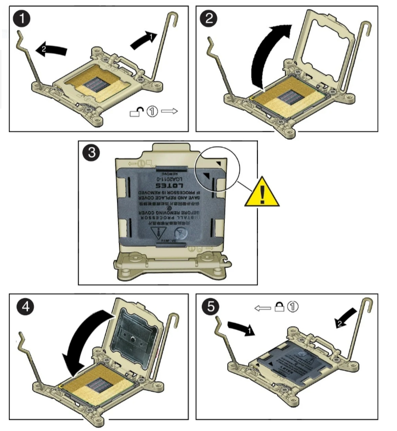
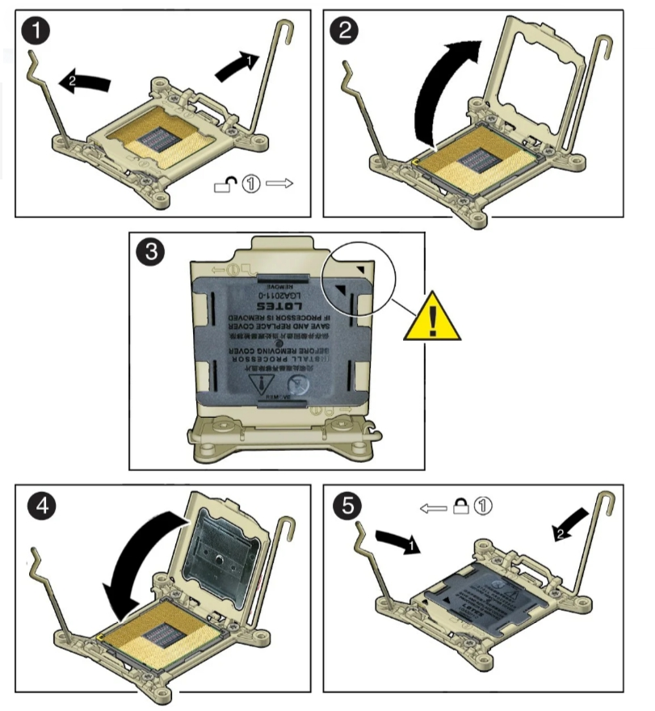
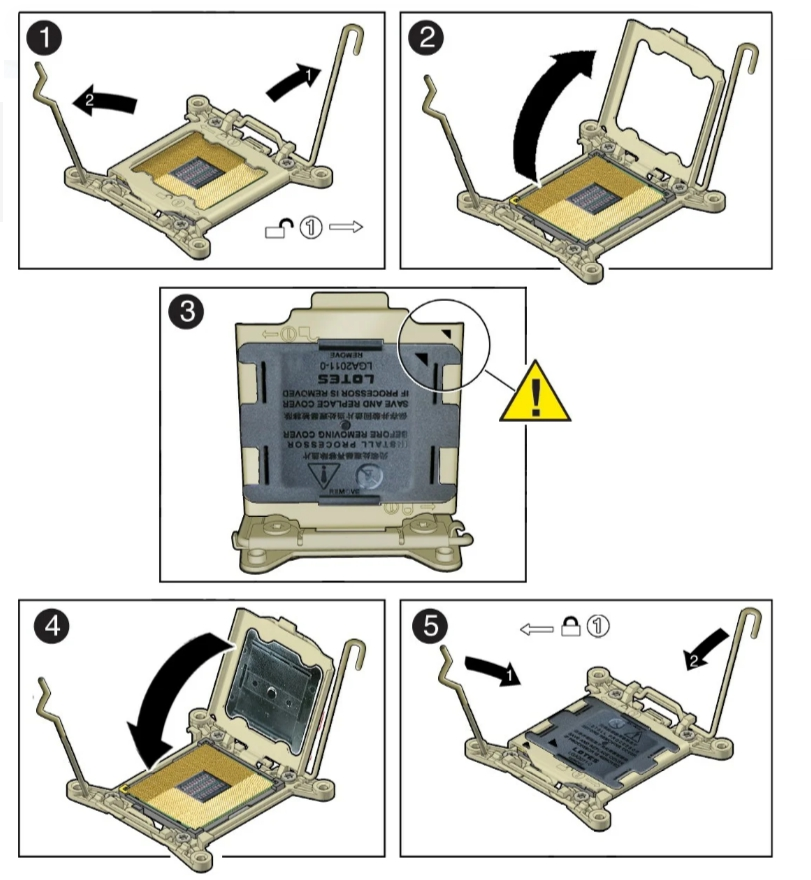

Компьютер - модульное устройство.
В самом простом случае достаточно материнской платы, процессора, оперативной памяти и блока питания. Уже такой набор можно включать. Но исполнять такому ПК будет нечего, требуется программная часть. Обычно первой запускается программа BIOS, которая позволяет настраивать компоненты ПК, а их на материнской плате очень много - часы, контроллеры устройств, отдельные чипы, например сетевого контроллера Ethernet, звука. После того как загрузится и выполнится BIOS он передает управление загрузочному устройству. Это может быть жёсткий диск (HDD), флешка, CD/DVD, твердотельный накопитель (SSD), локальная сеть.
Для работы на ПК еще потребуются контроллеры ввода - хотя бы клавиатура, устройство загрузки, например SSD и устройства вывода, чтобы смотреть результат выполнения программ - видеокарта и монитор. В случае с видеокартой это может быть не отдельное устройство, а чип, распаянный как на самой материнской плате, так и встроенный в центральный процессор, поэтому покупка отдельной видеокарты может не потребоваться.
А всё что у нас есть - мы поместим в корпус.

То есть финальный список компонентов выглядит так:
1)корпус
2)блок питания
3)материнская плата
4) процессор
5) оперативная память
6) видеокарта
7)твердотельный накопитель (SSD)
8)клавиатура
9)мышь
10)монитор
Установка процессора
Начать нужно с установки процессора в материнскую плату, а не с установки материнской платы в корпус.
Так будет попросту удобнее.
На материнской плате находим квадратную металлическую крышечку и открываем ее.
Перед нами открывается место для процессора.
 

То есть материнские платы для одних процессоров не подходят к другим.
О совместимости лучше спросить у консультантов при покупке мат.
платы или процессора. Теперь берем процессор и аккуратно вставляем его в разъем.
Теперь нужно закрыть процессор крышкой.
Установка охлаждения ЦПУ
После установки камня нужно поставить охлаждение для него.
Но перед установкой необходимо нанести термопасту на процессор.
Правда, сейчас практически на всех кулерах уже нанесена термопаста.
Если таковой нет, тогда тоненьким слоем аккуратно нанесите ее на процессор.

Теперь установим кулер. Крепления бывают разные, просто следуйте инструкции.
осле установки немного пошевелите охлаждение, оно должно очень крепко сидеть на материнской плате.

То есть материнские платы для одних процессоров не подходят к другим. О совместимости лучше спросить у консультантов при покупке мат. платы или процессора. Теперь берем процессор и аккуратно вставляем его в разъем. Теперь нужно закрыть процессор крышкой.